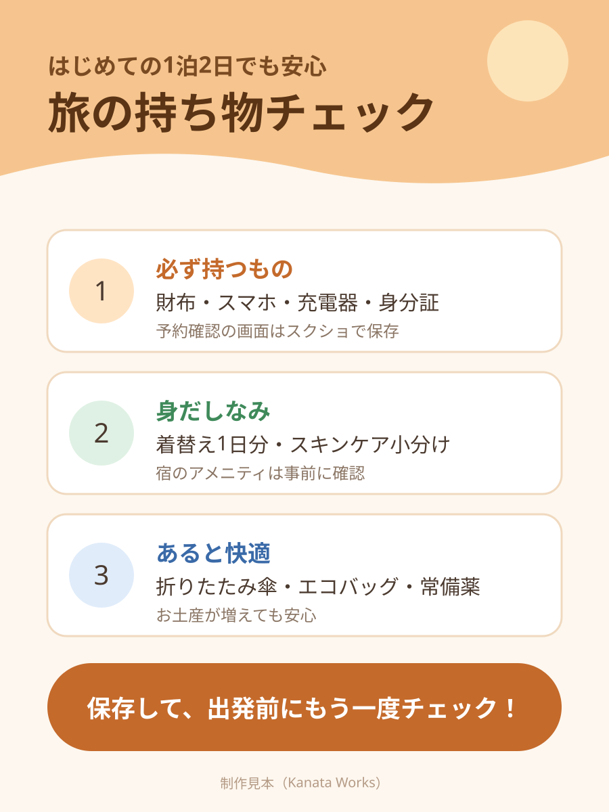

制作見本
Kanata Works の制作見本です。題材の店舗・データはすべて架空のものです。ご依頼では、支給素材・テンプレート・指定ルールに合わせて仕上げます。
← 作品一覧へ
Instagram投稿画像（カルーセル）
- 1枚目は保存したくなる表紙、2枚目以降は見出し・本文・ポイント枠の位置をそろえ、スワイプしても統一感が続く構成。
- スマートフォン表示で読める文字サイズと行間を確認しています。PNG／JPGで納品、Canva等のテンプレート支給にも対応します。
インフォグラフィック（図解）

- 「結論のタイトル→番号付きの3項目→行動をうながす締め」の順で、視線が上から下へ自然に流れる構成。
- 項目ごとに色を分け、補足は小さめの文字で添えて、ひと目で要点が拾えるようにしています。
- 参考資料の内容・数値・名称を1つずつ照合して反映し、誤字・配置を最終確認してから納品します。

LPコーディング
- ファーストビュー→こだわり3点→メニュー→予約の流れ→よくある質問→予約ボタンの、問い合わせにつなげる王道の構成。
- スマートフォン幅では1列に切り替わるレスポンシブ対応。追従ヘッダーとページ内リンク付き。
- デザインカンプ（画像・PDF）からのコーディングや、WordPressへの組み込みにも対応します。
PDF帳票のデータ化（CSV／Excel）
受 付 一 覧
| 受付番号 | 氏名 | 住所 | 品目 | 金額 | 備考 |
|---|---|---|---|---|---|
| R-1001 | 髙橋 花子 | 神奈川県模擬市港北9-10-11 テストビル３Ｆ | USBメモリ 64GB | 10,890 | ※至急 |
| R-1002 | 齋藤 太郎 | 福岡県仮想市天神12-13 | ファイル①〜③ セット | 47,410 | |
| R-1003 | 佐藤 太郎 | 福岡県仮想市天神12-13 | トナー ＃K-200 | 71,280 | |
| R-1004 | 齋藤 太郎 | 福岡県仮想市天神12-13 | トナー ＃K-200 | 5,500 | 要確認： 住所変更 |
| 受付番号 | 氏名 | 住所 | 品目 | 金額 | 備考 |
|---|---|---|---|---|---|
| R-1001 | 髙橋 花子 | 神奈川県模擬市港北9-10-11 テストビル３Ｆ | USBメモリ 64GB | 10,890 | ※至急 |
| R-1002 | 齋藤 太郎 | 福岡県仮想市天神12-13 | ファイル①〜③セット | 47,410 | |
| R-1003 | 佐藤 太郎 | 福岡県仮想市天神12-13 | トナー ＃K-200 | 71,280 | |
| R-1004 | 齋藤 太郎 | 福岡県仮想市天神12-13 | トナー ＃K-200 | 5,500 | 要確認：住所変更 |
240件12ページ×5ファイルを一括処理
1,680項目正解データと全項目一致
UTF-8（BOM付）Excelでそのまま開けるCSV
- 文字の座標から列と行を判定するため、セル内の折り返しも1つのセルに連結できます。ファイル名・ページ番号の列も付けられます。
- 電話番号・金額などの書式に合わない行は「要確認」列に印を付け、目視の確認を最小限にします。
- 帳票ごとに見出し名・レコードの目印・チェック規則を合わせ、サンプル数件で一致を確認してから全件を処理します。